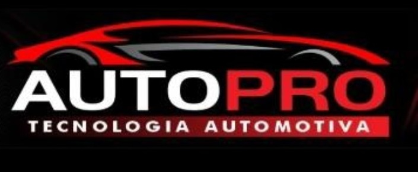
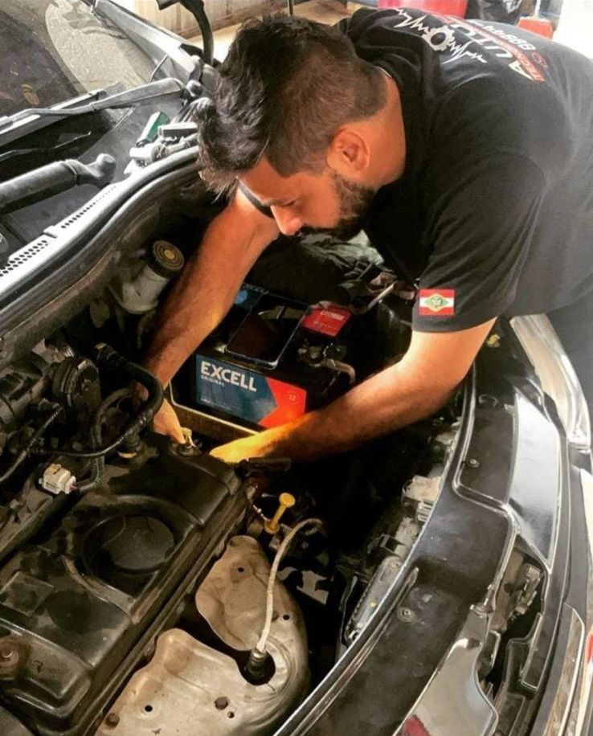
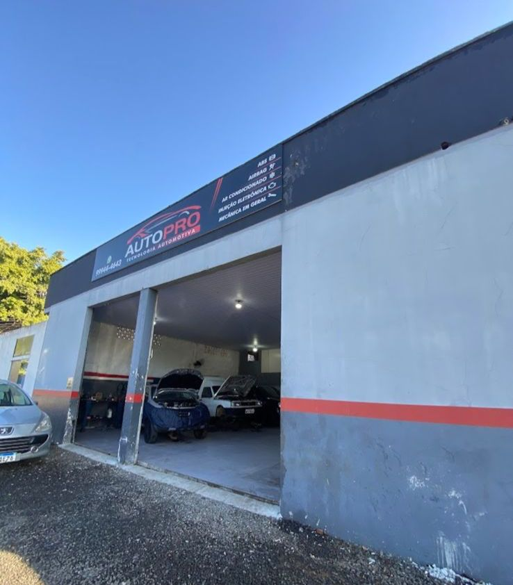
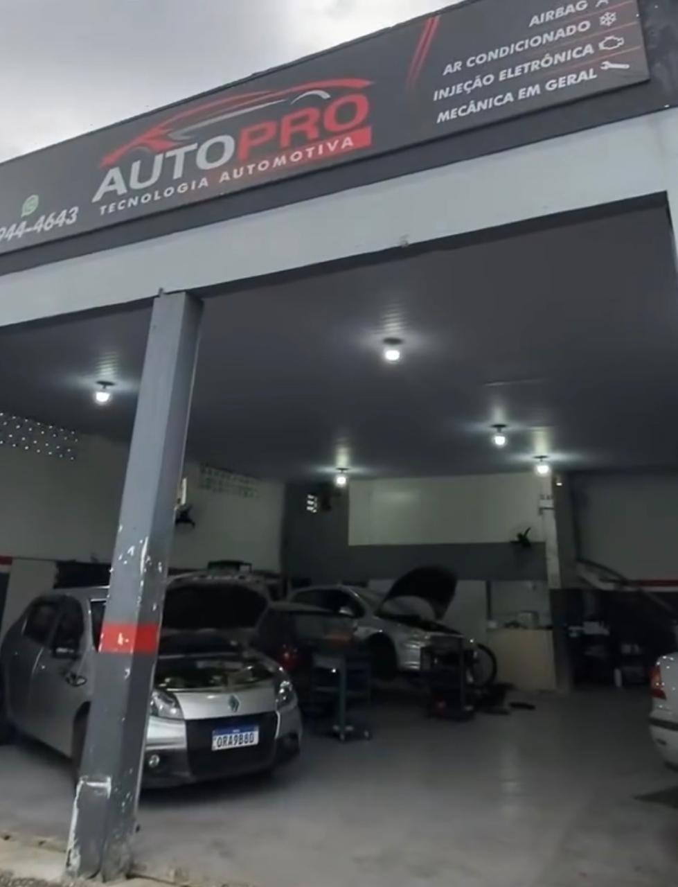

Tecnologia e excelência para seu carro
Especialistas em eletrônica automotiva, diagnóstico, injeção, módulos, airbag, ar-condicionado e mecânica em geral.

Profissionais preparados para cuidar do seu veículo.
Diagnóstico preciso com tecnologia automotiva.
Serviço feito com responsabilidade e transparência.
Atendimento na região de Criciúma.
O que fazemos
Identificação de falhas com equipamentos avançados.
Manutenção, regulagem e reparos no sistema de injeção.
Reparo e programação de módulos eletrônicos automotivos.
Serviços especializados no sistema de segurança do veículo.
Manutenção e reparos no sistema de climatização.
Serviços completos para manter seu carro em dia.
Sobre nós
A AutoPro Tecnologia Automotiva é uma oficina especializada em eletrônica automotiva, oferecendo soluções completas para veículos nacionais e importados.
Nosso objetivo é garantir diagnósticos precisos, serviços de qualidade e atendimento transparente.
Saiba mais sobre nós
Nossa estrutura


Av. Universitária, Bairro São Defende - Criciúma/SC
WhatsApp: (48) 99944-4643
Instagram: @autoprotecnologia
Endereço: Av. Universitária, Bairro São Defende - Criciúma/SC
Chamar no WhatsApp Ver Instagram